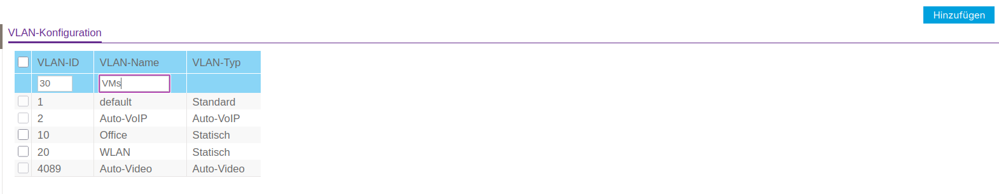
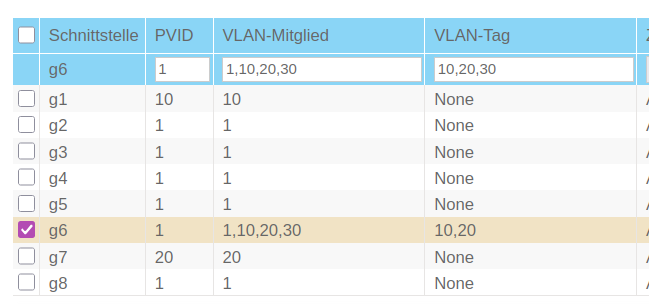
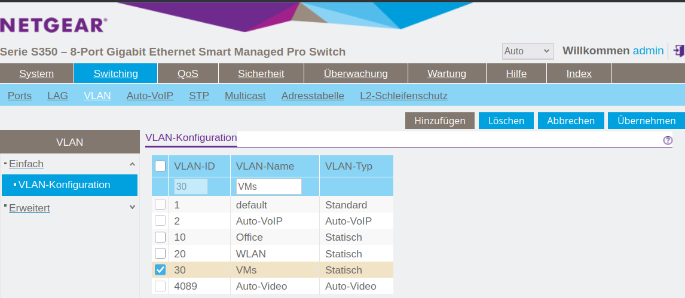
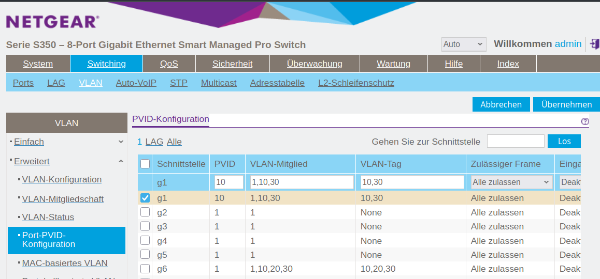

IPv6PrefixDelegation for Virtual Machine Manager


Introduction
After I set up IPv6 Prefix Delegation (PD) on my Linux router, I realized that I still need an IPv6 subnet for the virtual machines (VMs) I run on my desktop PC.
For a VM to get an address from a delegated prefix, I need a bridged interface with a connected VLAN, and a way to propagate the prefix to that segment. In this guide, I use systemd-networkd. Alternatives like NetworkManager or netplan can be used similarly, but the focus here is on declarative .network and .netdev units.
I also want the VLAN to be configured on my physical switch, with addresses assigned on my router. My host computer works as a bridge in this scenario, not as a NAT gatway or router. This way the VMs do not have acces to my Office VLAN which gives me extra security. This is especially important to me, as one of the VMs is a Windows 11 machine, which I consider insecure.
In the end my network is supposed to look like this:

Add new VLAN on the Switch

ATTRHTML: :width 50%

Add new VLAN on the Router
[Match] Name=eth0 Type=ether [Network] Description=Outbound Ethernet port DHCP=ipv6 IPv6AcceptRA=yes VLAN=Office VLAN=WLAN VLAN=VMs [Address] Address=192.168.178.254/24 [IPv6AcceptRA] Token=::1 [DHCPv6] PrefixDelegationHint=::/62 UseDelegatedPrefix=yes [Route] Gateway=192.168.178.1
[NetDev] Name=VMs Kind=vlan [VLAN] Id=30
[Match] Name=VMs Type=vlan [Network] Description=VMs VLAN interface DHCP=ipv6 IPv6SendRA=yes IPv6AcceptRA=no DHCPPrefixDelegation=yes [Address] Address=172.16.30.1/24 [DHCPPrefixDelegation] Token=::1 SubnetId=0x2
Configure Host
Configure networkd
First, configure the physical Ethernet interface in /etc/systemd/network/10-eth0.network. I match the device by MACAddress rather than name, which avoids renaming issues after reboots or BIOS updates.
Explanation of key options:
DHCP=yes: enables both IPv4 and IPv6 DHCP if advertisedIPv6AcceptRA=yes: allows the interface to receive router advertisementsIPv6SendRA=yes: enables the system to forward router advertisements to child interfacesIPv4Forwarding=andIPv6Forwarding=: enable packet forwardingVLAN=: binds named VLAN interfaces to this physical device
[Match] MACAddress=d8:bb:c1:8b:b9:d1 Type=ether [Network] Description=Physical Ethernet Port DHCP=yes IPv6AcceptRA=yes IPv6SendRA=yes
Just to be sure, I also activate forwarding:
IPv4Forwarding=yes IPv6Forwarding=yes
Here is also the place to include the VLANs which are connected to that device — in this case:
Officefor the host andVMfor the virtual machines.
VLAN=Office VLAN=VM
VLAN 10: Host network
I want to use the Office VLAN for my host, as it is my Office PC in /etc/systemd/network/00-vlan10.netdev. To use it I need to first define a virtual network of Kind vlan. In the [VLAN] I need to give the VLAN Id.
[NetDev] Name=Office Kind=vlan [VLAN] Id=10
Next I have to configure it in /etc/systemd/network/20-vlan10.network For addressing I use DHCP and RA for IPv6 again.
[Match] Name=Office Type=vlan [Network] Description=Office VLAN interface DHCP=yes IPv6AcceptRA=yes
This will be the device I actually connect to on my host.
VLAN 30: Bridge for VMs
Next I need a VLAN interface for the virtual machines:
VLAN 30: Bridge for VMs
NAME: 50-vlan20.netdev
[NetDev] Name=VM Kind=vlan [VLAN] Id=30
Bridge device (br30)
And I need a brigde device to which the VMs can connect.
[NetDev] Name=br30 Kind=bridge
Attach VLAN 30 to the bridge
Now I need to connect the bridge device to the virtual VLAN interface, I called VM. For that I use the following options in /etc/systemd/network/20-vlan3.network.:
Bridge=br30connects this VLAN interface to the bridgeIPv6AcceptRA=yesallows RA to be accepted and relayed to VMsLinkLocalAddressing=ipv6ensures IPv6 link-local addresses are generated
[Match] Name=VM Type=vlan [Network] Description=VM VLAN interface Bridge=br30 IPv6AcceptRA=yes LinkLocalAddressing=ipv6
Bridge interface configuration
The bridge itself should be transparent, not routing or managing RA:
Explanation:
IPv6AcceptRA=noavoids the bridge configuring itself.IPv6SendRA=noprevents the bridge from issuing router advertisements.LinkLocalAddressing=kernellets the kernel assign a link-local address.
[Match] Name=br30 [Network] BridgeForwardDelaySec=0 IPv6AcceptRA=no IPv6SendRA=no LinkLocalAddressing=kernel
Virtual Machine Configuration
Connect your VM interfaces to br30 using `virt-manager` or XML:
<interface type='bridge'> <source bridge='br30'/> <model type='virtio'/> </interface>
![Screenshot of the network interface settings of a virtual machine, from the Virt-Manager GUI. On the left, a vertical navigation menu lists various configuration sections including “Overview,” “OS information,” “CPUs,” “Memory,” “NIC :e7:4c:6a” (currently selected), and others. On the right, the details tab is open for the virtual network interface: Tab: “Details” (active, next to “XML”); Network source: “Bridge device...”; Device name: br20; Device model: virtio (dropdown shown); MAC address: 52:54:00:e7:4c:6a; IP address: “Unknown”; Link state: active (checkbox checked).](img/VirtManagerBridge.png)
Configure VLAN 30 on the router
On my raspberry pi router I now need to configure the new VLAN 30 for the VMs. First I need to configure /etc/systemd/network/00-vlan30.netdev there:
[NetDev] Name=VMs Kind=vlan [VLAN] Id=30
Bridge device (br20)
Next comes /etc/systemd/network/20-vlan30.network:
[Match] Name=VMs Type=vlan
Attach VLAN 20 to the bridge
In the [Network] section we need the following options:
- DHCP=ipv6
- Enables the DHCPv6 client on this interface.
- IPv6SendRA=yes
- The system sends Router Advertisements (
RA) on this interface. - IPv6AcceptRA=yes
- The system accepts incoming Router Advertisements.
- DHCPPrefixDelegation=yes
- Enables the interface to request a delegated prefix via
DHCPv6.
[Network] Description=VMs VLAN interface DHCP=ipv6 IPv6SendRA=yes IPv6AcceptRA=yes DHCPPrefixDelegation=yes
Bridge interface configuration
- Token=::1
- Specifies the interface identifier (
IID) suffix to be used when constructing the delegated address or prefix. This value is appended to the delegated prefix to form the full IPv6 address. For example, with a delegated prefix2001:db8:1234:567c:/62andToken=::1, the resulting address might be2001:db8:1234:567c::1. - SubnetId=0x2
- Specifies a hexadecimal subnet ID used to select a specific
/64subnet from the delegated prefix. For example, with a delegated/62, settingSubnetId=0x2would assign the third network2001:db8:1234:567e::/64to the interface. - Assign=yes
- Indicates that the selected subnet (via
SubnetId) should be assigned to the interface automatically. - Announce=yes
- Enables the system to announce the assigned prefix via
RA, making it available to other devices on the link.
[DHCPPrefixDelegation] Token=::1 SubnetId=0x2 Assign=yes Announce=yes
Lastly I need to setup my legacy DHCP pool for the VMs VLAN in /etc/dnsmasq.d/00-vlans.conf:
- interface=VMs
- Binds `dnsmasq` to the network interface named `VMs`. It will listen and provide DHCP on this interface.
- dhcp-range=set:vlan30,172.16.30.10,172.16.30.200,255.255.255.0,24h
- Defines a DHCP address pool for clients tagged with `vlan30`. The range is from `172.16.30.10` to `172.16.30.200`, with a subnet mask of `255.255.255.0`, and lease duration of 24 hours.
- dhcp-option=tag:vlan30,option:router,192.168.178.254
- Specifies the default gateway (router) for DHCP clients tagged with `vlan30`. Clients will receive `192.168.178.254` as their default route, which is my pi-routers
WAN interface IP. - dhcp-option=tag:vlan30,option:dns-server,192.168.178.254
- Sets the DNS server for clients tagged with `vlan30` to `192.168.178.254`. This is sent as part of the DHCP offer.
# DHCP for vlan-interfaces interface=WLAN dhcp-range=set:vlan10,172.16.10.10,172.16.10.200,255.255.255.0,24h dhcp-option=tag:vlan10,option:router,192.168.178.254 dhcp-option=tag:vlan10,option:dns-server,192.168.178.254 interface=Office dhcp-range=set:vlan20,172.16.20.10,172.16.20.200,255.255.255.0,24h dhcp-option=tag:vlan20,option:router,192.168.178.254 dhcp-option=tag:vlan20,option:dns-server,192.168.178.254 interface=VMs dhcp-range=set:vlan30,172.16.30.10,172.16.30.200,255.255.255.0,24h dhcp-option=tag:vlan30,option:router,192.168.178.254 dhcp-option=tag:vlan30,option:dns-server,192.168.178.254
Configure VLAN 30 on the Switch
For the whole setup to work I also need to create the VLAN with Id 30 on the managed switch. How to do this depends on your type of switch of course.

You need to make sure, that the interface connect to the host PC is marked as ’tagged’ and that the VLAN 10 and 30 are associated with the port. You also need to associate VLAN 30 with the port to the router.

Switch to systemd-networkd
My system ran on NetworkManager, which I want to replace by systemd-networkd now, which is the better choice on a desktop without Wifi anyway. This is easly done by running:
sudo systemctl disable --now NetworkManager sydo systemctl enable --now systemd-networkd
Just checking that there occurred no problems:
systemctl status systemd-networkd
The output should look something like this:
● systemd-networkd.service - Network Configuration
Loaded: loaded (/usr/lib/systemd/system/systemd-networkd.service; enabled; preset: disabled)
Active: active (running) since Thu 2025-07-31 07:45:37 CEST; 2 days ago
Invocation: 8fc13f7bd3854763a86c1eb8900269a7
TriggeredBy: ● systemd-networkd.socket
Docs: man:systemd-networkd.service(8)
man:org.freedesktop.network1(5)
Main PID: 1521 (systemd-network)
Status: "Processing requests..."
Tasks: 1 (limit: 19023)
FD Store: 0 (limit: 512)
CPU: 3.775s
CGroup: /system.slice/systemd-networkd.service
└─1521 /usr/lib/systemd/systemd-networkd
Warning: some journal files were not opened due to insufficient permissions.
And I also check that all device are up and configured:
ip --brief a
Only the Office interface should get an Global Unicast IPv6 Address (GUA).
lo UNKNOWN 127.0.0.1/8 ::1/128 enp0s16f0u1 UP 172.16.10.154/24 metric 1024 fe80::dabb:c1ff:fe8b:b9d1/64 br30 UP fe80::84d9:45ff:fe20:bb32/64 Office@enp0s16f0u1 UP 172.16.10.155/24 metric 1024 3fff:abc:def:bf0c:dabb:c1ff:fe8b:b9d1/64 fe80::dabb:c1ff:fe8b:b9d1/64 VM@enp0s16f0u1 UP fe80::dabb:c1ff:fe8b:b9d1/64
Disable filtering for the bridge device
Up to this point everything work very straight forward. But when I tried to connect to the network, I didn't get an address. It took me quite some time to find the problem and solve it.
The problem is the default behavior on Linux is, that some packages are filtered on Layer 3 as well as Layer 2. As we are using the host as a mere bridge to the Virtual Machines, that' not desired. So we need to deactivate this behavior for bridge devices:
/etc/sysctl.d/99-brigde.conf
net.bridge.bridge-nf-call-ip6tables=0 net.bridge.bridge-nf-call-iptables=0 net.bridge.bridge-nf-call-arptables=0
This would however only take affect after a system restart, unless you read the file with sysctl:
sudo sysctl -f /etc/sysctl.d/99-bridge.conf
Conclusion
When you know the options to set, it is very easy to set up a dedicated VLAN from you router straight to you VMs. There are of course two more things to consider:
- You can not easily bridge
Wifiinterfaces. - Your
VMsare on a separate subnet, so you can not justsshinto them. There are serveral possible solutions to this:
Host Win Windows Window11 Windoof win
HostName fe80::d8b8:3a7:126b:162b%%VMs
User Username
IdentityFile ~/.ssh/win
ProxyJump pi
Host *
IdentitiesOnly yes
- Host Win Windows Window11 Windoof win
- Defines a group of host aliases. You can use any of these names (`Win`, `Windows`, etc.) with `ssh`, and the settings below will apply.
- HostName fe80::d8b8:3a7:126b:162b%%VMs
- Specifies the actual destination host. In this case, it's a link-local IPv6 address with the zone index `%%VMs` (the interface name needed for link-local communication).
- User Username
- Sets the SSH username to `Username` for this host.
- IdentityFile ~/.ssh/win
- Specifies the private SSH key file to use when connecting to this host.
- ProxyJump pi
- Uses the host alias `pi` as a jump host (SSH proxy). SSH will first connect to `pi`, then use it to reach the Windows machine.
- Host *
- A wildcard match for all hosts not explicitly listed above.
- IdentitiesOnly yes
- Ensures that only the identity files explicitly specified in the config (e.g. `~/.ssh/win`) are used for authentication, preventing SSH from trying other keys loaded in the agent.